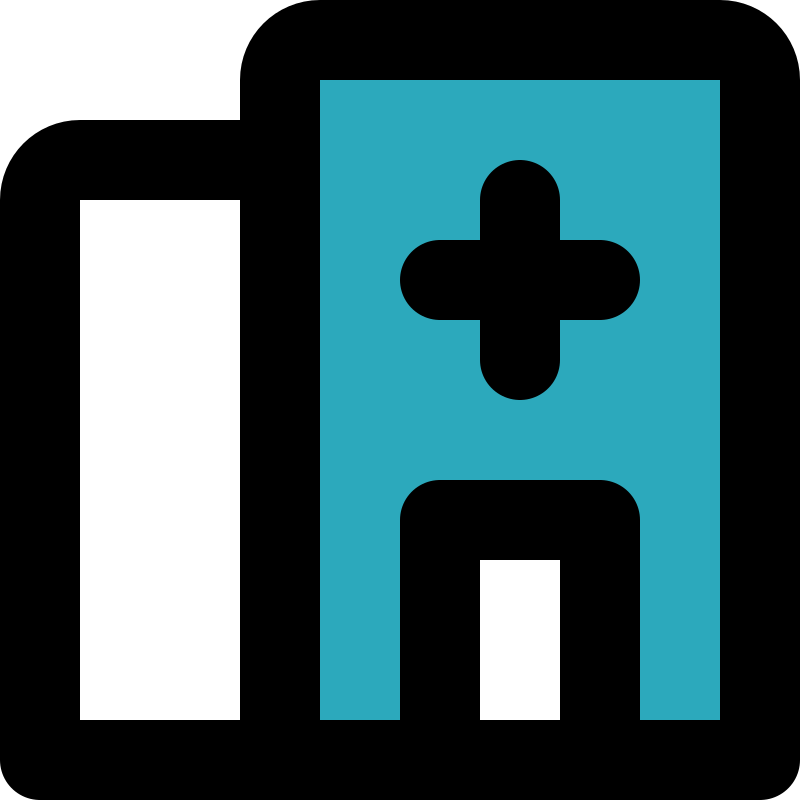

Informasi Terkait Peta
Peta Fasilitas Umum ini menampilkan titik-titik koordinat sebaran layanan publik utama yang dikelola atau berada dalam pengawasan yurisdiksi Desa Gemblengan. Fasilitas ini mencakup bangunan balai desa, puskesmas, fasilitas pendidikan, lapangan, hingga fasilitas keagamaan.
Ketersediaan peta sebaran ini diharapkan mempermudah masyarakat luas maupun pemangku kepentingan untuk meninjau jangkauan layanan dasar desa dan mengevaluasi area mana saja yang masih memerlukan pembangunan sarana prasarana baru.
Sistem Koordinat:
WGS 84 (EPSG:4326)
Pembaruan Terakhir:
Juli 2026
Legenda
Balai Desa

Puskesmas Bantu
Masjid / Musholla
 Sekolah
Sekolah
Lapangan
GOR
Batas Desa (Kabupaten)
Batas RT
Aliran Sungai
Jaringan Jalan